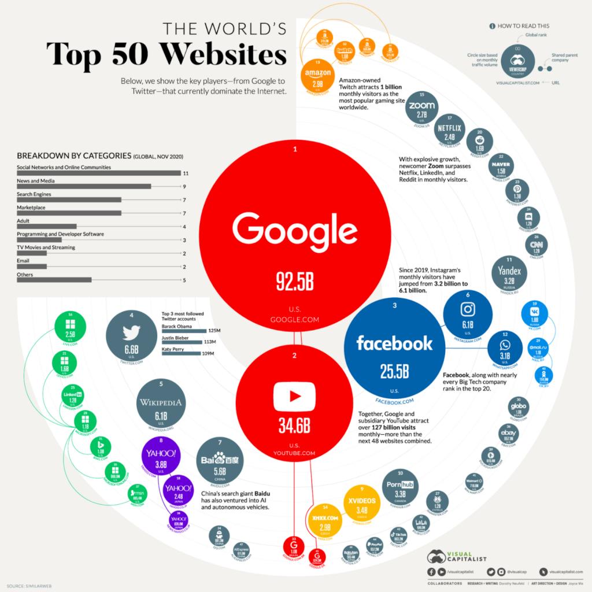

last decade in music
at this point in time of the year I just want to have fun and look at not so serious subjects, so I decided to go with a topic like music. there is some inspiration in the spotify or apple music compilations of personal user's most streamed songs, but I'm looking at a more broad scope of 100 most popular songs of each year, for the past 10 years (100x10=1000!)
for the first visualization mode, I want it to be a simple list, also inspired by the hot 100 list, but because it is my first time doing data vizualization I think it'll be helpful to start simple to find my ground.

for the second visualization I want to make it vusually like a solar system, each planet representing a year, and once you click in a planet it'll show the song from that year.

i always liked bubble charts, and I think it would be nice to follow some sort of visual similarity from the past modes, so I want to split the songs into genres and artists for le last two. the bigger the quantity of songs in a genre, or by an artist, the bigger their bubble.